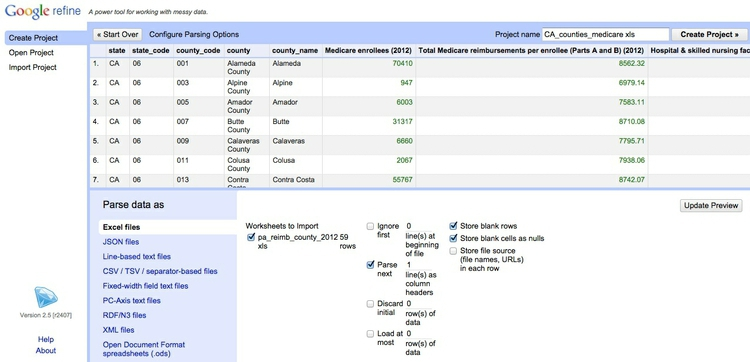

Acquiring, cleaning and formatting data
Not so many years ago, data was hard to obtain. Often journalists would have to painstakingly compile their own datasets from paper records. The Internet has changed the game. Today, many government and other public databases can now be queried online, and the results of those searches downloaded. Other datasets can be downloaded in their entirety.
The main problem today is usually not finding relevant data, but in working out whether it can be trusted, spotting and correcting errors and inconsistencies, and getting it in the right format for analysis and visualization.
In this class, we will cover some tips and tricks for finding the data you need online, getting it onto your computer, and how to recognize and clean “dirty” data. We will also review some common data formats, and learn how to convert from one to another.
The data we will use
Download the data for this workshop from here, unzip the folder and place it on your desktop. It contains the following folders and files:
cleaning Folder containing:
CA_counties_medicare.xlsSpreadsheet with data on Medicare reimbursement per enrollee by California county in 2012, from the Dartmouth Atlas of Healthcare. Includes the following fields:enrolleesMedicare enrollees in 2012.totalTotal Medicare reimbursements per enrollee.hospitalHospital & skilled nursing facility reimbursements per enrollee.physicianPhysician reimbursements per enrollee.outpatientOutpatient facility reimbursements per enrollee.homehealthHome health agency reimbursements per enrollee.hospiceHospice reimbursements per enrollee.medequipDurable medical equipment reimbursements per enrollee.
ucb_grants.csvData on grants from the U.S. federal government to the University of California, Berkeley, in 2013, from USASpending.gov.
geocoding Folder containing:
sf_test_addresses.tsvText file containing a list of 100 addresses in San Francisco.sf_addresses_short.tsvThe first 10 addresses from the previous file.refine-geocoder.jsonA script in JSON format that we will use to automate geocoding.
UKCTG Folder containing a samples of web pages detailing clinical trials, downloaded form the U.K. Clinical Trials Gateway.
Understand common data formats
CSV is just one variant of a “delimited” text file, in which the fields or columns in a table of data are separated by commas (hence comma-separated values, or CSV) or another character such as a tab. You may also encounter “fixed width” text files, in which the fields are lined up, with each located a specified number of characters across each row. Spreadsheets such as Libre Office Calc or Microsoft Excel can import fixed-width files, which you can then export in a delimited format for use in other software.
Text files are great for transferring data from one software application to another during analysis and visualisation, but other formats that are easier for machines to read are typically used when transferring data between computers online.
JSON, or JavaScript Object Notation, treats data as a series of “objects,” which begin and end with curly brackets. Each object in turn contains a series of name-value pairs. There is a colon between the name and value in each pair, and the pairs separated by commas.
Here, for example, are the first few rows of a simple dataset relating to a controversial theory claiming that the extent to which a country has developed a democratic political system is driven largely by the historical prevalence of infectious disease:
[{"country":"Bahrain","income_group":"High income: non-OECD","democ_score":45.6,"infect_rate":23},
{"country":"Bahamas, The","income_group":"High income: non-OECD","democ_score":48.4,"infect_rate":24},
{"country":"Qatar","income_group":"High income: non-OECD","democ_score":50.4,"infect_rate":24},
{"country":"Latvia","income_group":"High income: non-OECD","democ_score":52.8,"infect_rate":25},
{"country":"Barbados","income_group":"High income: non-OECD","democ_score":46,"infect_rate":26}]
XML, or Extensible Markup Language, is another format often used to move data around online. For example, the RSS feeds through which you can subscribe to content from blogs and websites using a reader such as Feedly are formatted in XML.
In XML data is structured by enclosing values within “tags,” similar to those used to code different elements on a web page in HTML. Here is that same data in XML format:
<?xml version="1.0" encoding="UTF-8"?>
<rows>
<row country="Bahrain" income_group="High income: non-OECD" democ_score="45.6" infect_rate="23" ></row>
<row country="Bahamas, The" income_group="High income: non-OECD" democ_score="48.4" infect_rate="24" ></row>
<row country="Qatar" income_group="High income: non-OECD" democ_score="50.4" infect_rate="24" ></row>
<row country="Latvia" income_group="High income: non-OECD" democ_score="52.8" infect_rate="25" ></row>
<row country="Barbados" income_group="High income: non-OECD" democ_score="46" infect_rate="26" ></row>
</rows>
Search for data on the web
In Week 1 we considered specific data portals relevant to science reporters. Often, however, your starting point in searching for data will be Google. Simply combining a few keywords in a Google search with “data” or “database” may be enough to find what you need, but it can be worth focusing your queries using Google’s advanced search:
(Source: Google)
The options to search by site or domain and file type can be especially useful when looking for data. For example, the U.S. Geological Survey is the best source of data on earthquakes and seismic risk, so when searching for this information, specifying the domain usgs.gov would be a good idea. You can make the domains as narrow or broad as you like: .edu, for instance, would search the sites of all U.S. academic institutions using that top-level domain; ucsc.edu would search the web pages of this university only.
The file type search offers a drop-down menu, with the options including Excel spreadsheets, and Google Earth KML and KMZ files. These are common data formats, but you are not limited to those on the menu. In a regular Google search, type a space after your search terms followed by filetype:xxx, where xxx is the suffix for the file type in question. For example, dbf will look for database tables in this format. Combining file type and domain searches can be a good way to find data an agency has posted online — some of which may not otherwise be readily accessible.
One common data format doesn’t show up file type searches. Geographical data is often made available as “shapefiles.” Because they consist of multiple files that are usually stored in compressed folders, shapefiles can’t readily be searched using a file type suffix, but they can usually be found by adding the terms “shapefile” or “GIS data” to a regular Google search.
Search online databases
Many important public databases can be searched online, and some offer options to download the results of your queries. Most of these databases give a simple search box, but it’s always worth looking for the advanced search page, which will offer more options to customize your search. Here, for example, is the advanced search page for ClinicalTrials.gov:
(Source: ClinicalTrials.gov)
When you start working with a new online database, take some time to familiarize yourself with how its searches work: Read the Help or FAQs, and then run test searches to see what results you obtain. Here, for example, is the “How To” section of ClinicalTrials.gov.
Many online databases can be searched using Boolean logic, using the operators AND, OR and NOT to link search terms together. So find out how a particular database uses Boolean logic — and the default settings that it will use if you list search terms without any Boolean operators.
Putting search terms in quote marks often searches for a specific phrase. For example, searching for “heart attack” on ClinicalTrials.gov will give only give results in which those two words appear together; leaving out the quote marks will include any trial in which both words appear.
Also find out whether the database allows “wildcards,” symbols such as * or % that can be dropped into your search to obtain results with variations on a word or number.
Look for download options — and know when you are hitting the wall
Having run a search on an online database, you will usually want to download the results, so look for the download links or buttons.
A common problem with online databases, however, is that they may impose limits on the number of results that are returned on each search. And even when a search returns everything, there may be a limit on how many of those results can be downloaded to your own computer.
If broad searches on a database keep returning the same number of results, that is a sign that you are probably running up against a search limit, and any download will not contain the complete set of data that you are interested in. However, you may be able to work out ways of searching to obtain all of the data in chunks.
Download the entire database
Downloading an entire database, where this is allowed, frees you from the often-limited options given on an online advanced search form: You can then upload the data into your own database software, and query it in any way that you want. We will learn how to do this in Week 5.
So always look for ways to grab all of the data. One trick is to run a search on just the database’s wildcard character, or with the query boxes left blank. If you do the latter at ClinicalTrials.gov, for instance, your search will return all of the trials in the database, which can then be downloaded using the options at the bottom of the results page.
Other databases have an online search form, but also have a separate link from where data to be downloaded in its entirety, usually as a text file or series of text files. One example is Bioresearch Monitoring Information System, which lists doctors and other researchers involved in testing experimental drugs being considered for marketing approval by the Food and Drug Administration. It can be searched online here, but can also be downloaded in full from here.
Note that large text files are again often stored in compressed folders, so may be invisible to a Google search by file type.
Automate downloads of multiple data files
Often data doesn’t reside in a single searchable database, but instead exists online as a series of separate files. In such cases, clicking on each link is tedious and time-consuming. But you can automate the process using the DownThemAll! Firefox add-on.
To illustrate, go to Gapminder’s data catalog, and select All indicators. The webpage now includes links to more than 500 downloadable spreadsheets. Right-click and select DownThemAll!....
At the dialog box, you can choose where to save the files, and to filter the links to select just the files you want. In this case, unchecking all the boxes and Fast Filtering using the term xls will correctly identify the spreadsheet downloads:
Extract data from tables on the web
On other occasions, data may exist in tables on the web. Copying and pasting data from web tables can be tricky, but the Table2Clipboard Firefox add-on simplifies the process.
Before using the add-on, select Tools>Table2Clipboard and choose the following options under the CSV tab:
This will ensure that each row in the extracted data is put on a new line, and each column is separated by a tab.
To illustrate what Table2Clipboard does, go to The International Disaster Database and select Disaster List. Select United States under Country, then holding down the Ctrl (Windows) or Command/⌘ (Mac) key, select dates from 1990 onwards under Period and Storm under Type. Then click Search.
When the table of data appears, right-click anywhere within it and select Table2Clipboard>Copy whole table:
(Source: The International Disaster Database)
You can now paste the data into an empty text file, or into a spreadsheet.
Manipulate urls to expose the data you need
As you search for data using web query forms, make a habit of looking at what happens to the url. Often it will contain patterns detailing the search you have run, and it will be possible to alter the data provided by manipulating the url. This can be quicker than filling in search forms. In some cases it may even reveal more data than default search options will allow.
To illustrate how this works, go to the ISRCTN clinical tral registry, and then navigate to the advanced search page. Enter “cancer” under Condition and note that more than 1700 trials are returned.
The url should now have changed to the following:
http://www.isrctn.com/search?q=&filters=condition%3Acancer&searchType=advanced-search
Notice that the default is to display 10 results per page, and then change the view to see the maximum of 100 trials allowed by the dropdown menu. The url should now read:
http://www.isrctn.com/search?pageSize=100&sort=&page=1&q=&filters=condition%3Acancer&searchType=advanced-search
Now change that url to:
http://www.isrctn.com/search?pageSize=2000&sort=&page=1&q=&filters=condition%3Acancer&searchType=advanced-search
Having done so, all of the registered clinical trials involving cancer should now be displayed on a single page. We can now use DownThemAll! to download all of the individual web pages describing each of these trials. Right-click, select DownThemAll!... as before, and notice that each link to a trial page contains &totalResults. So Fast Filtering using this term will identify the correct links for download.
Use application programming interfaces (APIs)
Websites like the ISRCTN clinical trial registry are not expressly designed to be searched by manipulating their urls, but some organizations make their data available through APIs that can be queried by constructing a url in a similar way. This allows websites and apps to call in specific chunks of data as required, and work with it “on the fly.”
To see how this works, go to the U.S. Geological Survey’s Earthquake Archive Search & URL Builder, where we will search for all earthquakes with a magnitude of 5 or greater that occured witin 6,000 kilometers of the geographic center of the contiguous United States, which this site tells us lies at a latitude of 39.828175 degrees and a longitude of -98.5795 degrees. We will initially ask for the data in a format called GeoJSON (a variant of JSON, a common format used to trasmit data over the web, which we will consider later). Enter 1900-01-01T00:00:00 under Start for Date & Time boxes so that we obtain all recorded earthquakes from the beginning of 1900 onward. The search form should look like this:
(Source: U.S. Geological Survey)
You should recieve a quantity of data at the following url:
http://comcat.cr.usgs.gov/fdsnws/event/1/query?starttime=1900-01-01T00:00:00&latitude=39.828175&longitude=-98.5795&maxradiuskm=6000&minmagnitude=5&format=geojson&orderby=time
See what happens if you append -asc to the end of that url: This should sort the the earthquakes from oldest to newest, rather than the default of newest to oldest. Here is the full documentation for querying the earthquake API by manipulating these urls,
Now remove the -asc and replace geojson in the url with csv. The data should now download in CSV format.
Scrape data from the web
Sometimes you will need to compile your own data from information that is spread across a series of webpages, or maintained in a database that doesn’t allow simple downloads of the data or API access. This is where web scraping comes in.
Using programming languages such as Python, it is possible to write scripts that will pull data down from many webpages, or query web search forms to download an entire database piece by piece.
Web scraping by coding is beyond the scope of this class. However, the underlying process is simple to understand: Identify the patterns you would need to follow if collecting the data manually, then write a program to automate the process and write the results to a data file. That often means experimenting to reveal the most efficient way of exposing all of the data you require.
We have already been performing some of the elements of web scraping, by manipulating urls on web search forms and then downloading the individual links that are returned en masse.
There are a number of tools that allow non-programmers to scrape data from the web. These tools include OutWit Hub and the Windows-only Helium Scraper. However, in today’s class, we will use Import.io and Kimono. Both allow you to download the scraped data, and also to set it up as an API, so it can be accessed by other applications over the web.
To demonstrate webscraping, we will first consider the U.K. Clinical Trials Gateway.
Enter *a* OR *e* OR *i* OR *o* OR *u* into the gateway’s search box. Through experimentation, I have found that this search seems to return all available trials in the database. Think about why this works: * is a wildcard, and using it in this way with OR Boolean operators asks the database to return all trials with a keyword containing a vowel.
Having run this search, scroll down and use the two drop-down menus to display All results with Trial Status - All, so that links to all of the trials are displayed on a single page. At this point, use DownThemAll! to download all of these links, as we did earlier for cancer trials at the ISRCTN registry.
Often it make sense, when scraping, to break the process up into steps: First download all of the individual web pages to your computer, then “parse” them to extract the information you need, saving it into a single file as a table of data.
To demonstrate Import.io, we will work with a small sample of trials from the database in the UKCTG folder.
Import.io is intended primarily to scrape pages directly from the web. Making it scrape pages that have been saved on your computer means setting up a local webserver, but that is easy to do.
If you are using a Mac, open a Terminal window (Applications>Utilities>Terminal) and navigate to your Desktop by typing cd Desktop and hitting return. Then type python -m SimpleHTTPServer 8000 and again hit return.
Now open your browser, and go to the url: http://127.0.0.1:8000/. You should see the contents of your Desktop, displayed as a series of hyperlinks. Navigate to the UKCTG folder.
On Windows, you will first need to download the Mongoose webserver: You want the free Windows Executable. Launch the application, and it will open your default browser at the url for the local server (on my Windows machine, this is: http://10.211.55.3:8080/). A small Mongoose icon will also appear on your Toolbar:
Click on this icon, and Set shared directory to your Desktop. Then refresh your browser, where you should see the contents of your Desktop, displayed as a series of hyperlinks. Navigate to the UKCTG folder.
On either platform, you should now be looking at a screen like this:
Launch Import.io, enter your account details, and then select New>Crawler. You should see a screen like this:
Copy the url showing the UKCTG files from your browser into the Import.io
address bar, then navigate to the first of the links and click ✓ I'm there! followed by Detect optimal settings. When asked if the data you want to extract is still in the browswer, click Yes, and at the next dialog box select the Single option:
Now we can select the data we want to extract from each page, organizing it into columns.
Click + Add column, call it title, make sure it is treated as Text and click ✓ Done. Now highlight the trial title on the webpage and click Train. The trial’s title should appear in the table at bottom left:
Note, when naming fields in data, use labels that are descriptive but brief; avoid spaces (I use underscores if necessary). This practice will make it easier to query data in a database.
Repeat the process for the “Source of Record URL”, which gives a link to the trial at ClinicalTrials.gov, making the data type Link:

Repeat for other data as desired, taking care to select the correct data format for each column. Here I have selected all of the available fields:
Having selected the data you want from the page, click ✓ I've got what I need!.
Now click Add another page, navigate to the second trial link, and click ✓ I'm there!. You may need to click on some of the columns and train to make the data appear.
Repeat the process for at least five webpages: more should give better results. Once you are satisfied that you are obtaining consistent results, click ✓ I'm done training and then Upload to import.io. Enter a name for the crawler and click ✓ OK, and when you receive the Success! message, Run crawler.
The next dialog box allows you to select the starting pages for the scrape/crawl, the number of links to follow to find similar pages (Page depth) and the format for the data (CSV or JSON):
In this case we should select the main UKCTG folder as the starting page, and we can set Page depth to 1, as all the pages we need to scrape link directly from it.
Click ► Go, and the scrape will now proceed, and you can view its progress in the information bar at the top of the screen:
Once your scrape is complete, click Upload data. The data will appear in a table, from which you can Download in formats including CSV and JSON:
Now we will scrape data on all doctors in New York State with disciplinary actions against their record, using Kimono. Navigate to this page, which is the start of the list. Then click on the Next Page link, and see that the url changes to the following:
http://w3.health.state.ny.us/opmc/factions.nsf/byphysician?OpenView&Start=30
Experiment with different numbers at the end of the url until you find the end of the list.
We can scrape the entire list by following the Next Page links after grabbing all the data on each page. Kimono is particularly good at this task. If you navigate back and forth through the list, you will notice that the first name on each Next Page is the last name on the previous page — which means that the scraped data will contain some duplicates, which will need to be removed before using the data.
Back at the first page, activate the Kimono bookmarklet so that the screen looks like this:
(The first time you use Kimono, you will proably need to click the question mark in the top toolbar to deactivate the help screen.)
Type name in the box at top left and then select the first entry under Physician Name:
Then click the check mark for the entry immediately below, and all 30 items in that column should be selected for scraping:
Now click the + symbol in the top toolbar to select a new datatype, and click on the first License Number. Click the check mark on the next entry below, and call this field lic_num:
Repeat the process to grab all the columns in the data (note if the first row is a null, select the next value), until the screen looks like this:
Now click the book, or pagination, icon to the right of the top toolbar:
Nagivate to the Next Page link and select that, so that the pagination icon changes to a check mark:
Click Done in the top toolbar and fill in the next screen as follows:
Selecting Weekly will run the scrape each week to capture new disciplinary actions; 500 pages will be enough to capture the entire list.
Click Create API and follow the link and the scrape will start to run.
Kimono can also scrape pages that populate with more data as you scroll down the page, like the list of tweets on your Twitter account. To activate this behavior, use the infinite scrolling icon:
Kimono can also be used to scrape data from a series of separate pages, like the individual links giving the details of each disciplinary action from the above example. In such cases, first set up an API to capture of those links, and then set up a second API to grab the data from each page using the urls in the first API, as explained here, and in this video.
To access your Kimono APIs over the web, you will need an API key, which you will find at your Account page.
PDFs: the bane of data journalism
Some organizations persist in making data available as PDFs, rather than text files, spreadsheets or databases. This makes the data hard to extract. While you should always ask for data in a more friendly format — ideally a CSV or other simple text file — as a data journalist you are at some point likely to find yourself needing to pull data out of a PDF.
For digital PDFs, Tabula is a useful data extraction tool — however it will not work with PDFs created by scanning the original document, which have to be interpreted using Optical Character Recognition (OCR) software.
Also useful is the online service Cometdocs. While it is a commercial tool, members of Investigative Reporters and Editors can obtain a free account. Cometdocs can read scanned PDFs, however its accuracy will vary depending on how well the OCR works on the document in question.
Can I trust this data?
Having identified a possible source of data for your project, you need to ask: Is it reliable, accurate and useful? If you rush into analysis or visualization without considering this question, your hard work may be undermined by the maxim: “Garbage In, Garbage Out.”
The best rule of thumb in determining the reliability of a dataset is find out whether it has been used for analysis before, and if so, by whom. If a dataset was put together for an academic study, or is actively curated so it can be made available for experts to analyse, you can be reasonably confident that it is as complete and accurate as it can be — the U.S. Geological Survey’s earthquake data is a good example.
While in general you might be more trusting of data downloaded from a .gov or .edu domain than something found elsewhere on the web, don’t simply assume that it is reliable and accurate. Before using any dataset, do some background research to find out how it was put together, and whether it has been rigorously checked for errors. If possible, try to speak to the people responsible for managing the database, and any academics or other analysts who have used the data. They will be your best guide to a dataset’s strengths and weaknesses.
Even for well-curated data, make a point of speaking with experts who compile it or use it, and ask them about the data’s quirks and limitations. From talking with experts on hurricanes, for example, I know not to place too much trust in data on North Atlantic storms prior to about 1990, before satellite monitoring was well developed — even though the data available from the U.S. National Oceanic and Atmospheric Adminstration goes back to 1851.
Always ask probing questions of a dataset before putting your trust in it. Is this data complete? Is it up-to-date? If it comes from a survey, was it based on a representative sample of people who are relevant to your project? Remember that the first dataset you find online may not be the most relevant or reliable.
Recognize dirty data
In an ideal world, every dataset we find would have been lovingly curated, allowing us to start analysing and visualising without worrying about its accuracy.
In practice, however, often the best available data has some flaws, which may need to be corrected as far as is possible. So before starting to work with a new dataset, look for common errors.
Look for glitches in the alignment of columns, which may cause data to appear in the wrong field.
For people’s names, look for variations in spelling, format, initials and accents, which may cause the same person to appear in multiple guises. Similar glitches may affect addresses, and any other information entered as text.
Some fields offer some obvious checks: if you see a U.K. postal code that starts with a number, for instance, you know it must be wrong.
Dates can also be entered incorrectly, so it’s worth scanning for those that fall outside the timeframe that should be covered by the data.
Also scan numbers for any obvious outliers. These values are worth checking out. Are they correct, or did someone misplace a decimal point or enter a number in the wrong units?
Other common problems are white spaces before and after some entries, which may need to be stripped out.
At all stages of your work, pay attention to zeros. Is each one actually supposed to represent zero, or should the cell in fact be empty? Take particular care exporting data from one software tool and importing to another, and check how empty cells, or “nulls,” have been handled.
Clean and process data with Open Refine
Checking and cleaning “dirty” data can be the most labor intensive part of many data journalism projects, but Open Refine (formerly Google Refine) can streamline the task — and also create a reproducible script to quickly repeat the process on data that must be cleaned and processed in the same way.
When you launch Open Refine, it opens in your web browser. However, any data you load into the program will remain on your computer — it does not get posted online.
The opening screen should look like this:
Reshape data from wide to long
First we will use Open Refine to convert data on Medicare spending per enrollee by county in California in 2012, from the Dartmouth Atlas of Health Care, form “wide” to “long” format. Download the data from here. (Medicare is the main U.S. government healthcare programme for retirees.) In addition to state and country names and codes, the file contains six fields
detailing Medicare reimbursements per enrollee, in various categories.
Click the Browse button and navigate to the file CA_counties_medicare.xls. Click Next>>, and check that data looks correct:

Open Refine should recognize that the data is in an .xls spreadsheet, but if not you can use the panel at bottom to specify the correct file type and format for the data.
When you are statisfied that the data has been read correctly, click the Create Project >> button at top right. Click on the 50 rows link to reveal more of the data, and the screen should look like this:
As you can see, the data is in wide format, with values for different categories of Medicare reimbursement organized in columns. To convert this to long format — with categories in one field and reimbursement costs in another — click on the small downward-pointing triangle for the first of these columns, and select Transpose>Transpose cells across columns into rows.
Fill in the dialog box as below, making sure that From Column and To Column are highlighted correctly, that the Key column and Value column have been given appropriate names, and that Fill down in other columns is checked.
Click Transpose to see the reshaped data:
Click the Export button at top right and you will see options to export the data in a variety of file types, including Comma-separated value and Excel spreadsheet.
Clean a dirty dataset
Now we will use Open Refine to process and clean data on grants from the U.S. federal government awarded to the University of California, Berkeley, in 2013.
Create a new project and import the data as before. Open Refine should recognize that the data is in a CSV file.
Open Refine allows you to create “facets” for each column in a dataset, which provide a powerful way to edit and clean data.
Click on the button for the field recipient_city_name, and select Facet>Text facet. A summary of the various entries now appears in the panel to the left:
We can edit entries individually: Select Berkley, click on the Edit link, and correct the spelling. Notice that the number of entries under the correct spelling increases by one.
One problem is that we have a mixture of cases, with some entried in Title or Proper Case, some in UPPERCASE. We can fix this back in the field itself. Click its button again and select Edit cells>common transforms>To titlecase. Notice that common transforms also includes options to remove unwanted white space.
Now create a text facet for the field recipient_name. You will see multiple variants of the same name, which should read: Regents of the University of California.

Click on the Cluster button. Here you can experiment with different clustering algorithms to edit text entries that may be variants of the same thing. In this case, using key collision and metaphone3 will collapse all of the entries into three clusters:

To merge the suggested matches, check Merge?, enter the correct New Cell Value (here Regents of the University of California) in each case), then click one of the Merge Selected buttons. In this dataset, there was only one correct entry for the recipient_name field, so this would have been easy to fix in a spreadsheet by copying the value all down the column. However, in circumstances where there are multiple possibilities and frequent errors in text entry, Open Refine’s clustering functions can be a major time saver.
Open Refine’s facets can also be used to inspect columns containing numbers. Click on the button for the field fed_funding_amount and select Facet>numeric facet. This will create a histogram showing the distribution of numbers in the field:
We can then use the slider controls to filter the data, which is good for examining possible outliers at the top of bottom of the range. Notice that here a small number of grants have negative values. The minus signs might be errors, so those grants would need to be checked out.
If the data is spread over a very wide range, we can switch to a logarithmic scale for the histogram by selecting change, entering log(value) for the expression and clicking OK.
Often we may need to convert fields to text, numbers or dates. For example, click on the button for starting_date and select Edit cells>common transforms>To date and see that it changes from a string of text to a date/time in international standard format: YYYY-MM-DDTHH:MM:SSZ (here T denotes the start of the time section, and Z terminates the entry).
Having done that, we can then select Facet>Timeline facet to look at date outliers, just as for numbers. Notice here that a couple of projects began in 1954, while several more began in the 1970s. If working on this dataset, these entries may need checking out, to make sure that the projects really are as long-running as the data suggests.
Now look for the column principal_place_zip, which has been recognized as a number when it should be treated as text. Select Edit cells>Common transforms>To text to correct this.
Notice that some of the codes have five digits, while others have the full nine-digit Zip code. If we are going to use the Zip codes in our analysis, we need to create a new column with five-digit codes.
Click on the button for the recipient_name field, select Edit column>Add column based on this column and enter the expression substring(value, 1). This should extract all the characters apart from the first. Now try substring(value, 0, 5), which should extract the desired five-digit Zip code. Call the new column principal_place_zip5 and click OK:
This is an example of some simple code in Open Refine’s expression language. We are “slicing” strings of text based on an index which defines the position of individual characters. The first character is 0, followed by 1, 2, and so on. We can also index from the end of the string: the last character is -1, the second last is -2, and so on.
If you feed the substring function just one number after value, it will start at that position, and give you that character and everything else to the end of the string. If you use two numbers, it will start at the first position and give you that character and everything up to (but not including) the second character.
We can also split or merge columns. For example, the column agency_code consists of a number, followed by a colon and some text. To put the numbers and text into different fields, click on the column’s button, and select Edit column>Split into several columns and fill in the dialog box as follows:
Click the OK button, and the columns will split.
Now we will merge the columns receip_addr1 and receip_addr2 into a single receip_addr field. Click on the button for the first of these columns and select Edit column>Add column based on this column and fill in the dialog box as follows:
Study the expression used:
cells["receip_addr1"].value + ", " + cells["receip_addr2"].value
This code “concatenates” the two text strings into a single string, including a comma followed by a space to separate them. Selecting the option On error: copy value from original column ensures that where the second column is blank, the new field will contain the value from the first.
Click OK and the new address column will be created.
While many of the options we have explored could also be done a spreadsheet, the big advantage of Open Refine is that we can extract a “pipeline” for processing data to use when we obtain data in the same format in future. It also means that all of your steps in processing the data can be retraced by anyone else who wants to check and verify your work. Ensuring reproducibility in data processing is good practice!
Select Undo / Redo and notice that there is a complete record of all the operations performed on the data:
Clicking on any of these steps will revert the dataset back to that stage in the process. This that means you don’t need to worry about making mistakes in your data processing: You can simply return to the point before the error, and resume your work from there.
Now click Extract. At the dialog box, check only those operations that you will want to perform in future (typically generic transformations on fields/columns, not correcting errors for individual entries):
This will generate JSON in the right hand panel that can be copied into a blank text file and saved with the extension json.
To process similar data in future. Click the Apply button on the Undo / Redo tab, paste in the text from this file, and click Perform Operations. The data will then be processed automatically.
When you are finished cleaning and processing your data, click the Export button at top right to export as a CSV file or in other formats.
You can also use facets to filter your data prior to export. Create a text facet for the agency_name column, and select include for the data you wish to retain, which will appear in red. Here, for example, I am selecting health-related agencies:
Open Refine is a very powerful tool that will reward efforts to explore its wide range of its functions for manipulating data, and to learn its expression language. See the Further Reading for more.
Geocode addresses with Open Refine
To illustrate its potential, we will use Open Refine to produce latitude and longitude co-ordinates from a list of addresses — a process known as “geocoding” that is often required before data can be put onto a map.
There are several geocoding APIs, which can be accessed in various ways. The number of requests allowed per day and the terms of use vary from service to service: Google’s free service, for instance, allows each user to geocode 2,500 addresses per day, and specifies that the resulting coordinates may only be used to make a Google Map.
Because of this restriction, we will instead use the services offered by Microsoft’s Bing Maps, and MapQuest (which is based on OpenStreetMap’s Nominatim service), to geocode this sample of addresses in San Francisco.
These geocoding APIs can both be accessed from Open Refine. Here is how to geocode addresses from Open Refine using the Bing API:
You will need a Bing Maps API key. To obtain that, follow the steps here. If you don’t already have a Microsoft Account, you will first need to create one.
Create a new Open Refine project by importing a text file containing complete addresses in one column, with the heading address. Our test data is already in this format; use sf_test_addresses_short.txt for this exercise.
From the address column, select Edit column>Add column by fetching URLs..., call the column bing_json and use the following expression:
"http://dev.virtualearth.net/REST/v1/Locations?q=" + escape(value, "url") + "&key=BingMapsKey"
Note that you will have to enter your own Bing API key in place of BingMapsKey. Also, set the Throttle delay to 500 milliseconds for faster processing. This expression constructs a URL that will query the Bing geocoding API and return data for the address in question in JSON format.
From the bing_json column, select Edit column>Add column based on this column..., call the column bing_lat_lon and use this expression to extract the latitude and longitude from the JSON returned by the API:
with(value.parseJson().resourceSets[0].resources[0].point.coordinates, pair, pair[0] +", " + pair[1])
Split the bing_lat_lon column into to two columns by selecting Edit column>Split into several columns, then rename these columns bing_latitude and bing_longitude.
From the bing_json column, select Edit column>Add column based on this column..., call the column bing_confidence and use this expression to extract the Bing API’s confidence in the accuracy of its geocoding:
with(value.parseJson().resourceSets[0].resources[0].confidence, v, v)
From the bing_json column, select Edit column>Add column based on this column..., call the column bing_type and use this expression to extract the type of place that the Bing API has geocoded:
with(value.parseJson().resourceSets[0].resources[0].entityType, v, v)
For a full address, this should return Address when the geocoding has been successful.
Finally, delete the bing_json column by selecting Edit column>Remove column.
It is now possible to extract JSON code that will allow you repeat these steps on any data in the same format. Here I have created an Open Refine geocoder that uses both the Bing and Mapquest Open APIs. Download ZIP from my Github repository, unzip the folder, and follow the instructions to try it out.
Standardize names with Mr People
For processing names from a string of text into a standardized format with multiple fields, you may wish to experiment with Mr People, a web app made by Matt Ericson, a member of the graphics team at The New York Times.
(Source: Mr People)
It takes a simple list of names and turns them into separate fields for title, first name, last name, middle name and suffix.
Mr People can save you time, but it is not infallible — for instance, it may give errors where people have multiple titles or suffixes, such as “MD, PhD.” So always check the results before moving on to further analysis and visualisation.
Convert from one data format to another
Mr Data Converter is a web app made by Shan Carter of the graphics team at The New York Times that makes it easy to convert data from a spreadsheet or delimited text file to JSON or XML.
Copy the data from a CSV or tab-delimited text file and paste it into the top box, select the output you want, and it will appear at the bottom. You will generally want to select the Properties variants of JSON or XML.
You can then copy and paste this output into a text editor, and save the file with the appropriate suffix (xml, json).

(Source: Mr Data Converter)
To convert data from JSON or XML into text files, use Open Refine. First create a new project and import your JSON or XML file. Then use the Export button and select Tab-separated value or Comma-separated value to export as a text file.
Further reading/resources
Paul Bradshaw. Scraping For Journalists
Dan Nguyen. The Bastards Book of Ruby
I use Python rather than Ruby, but this book provides a good introduction to the practice of web scraping using code, and using your browser’s web inspector to plan your scraping approach.